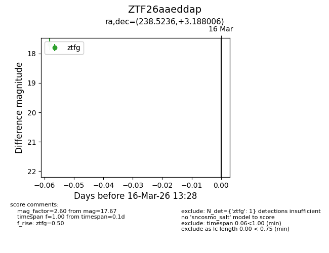
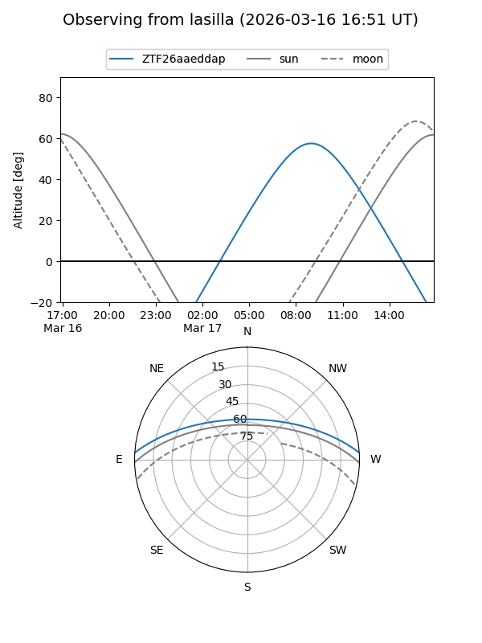
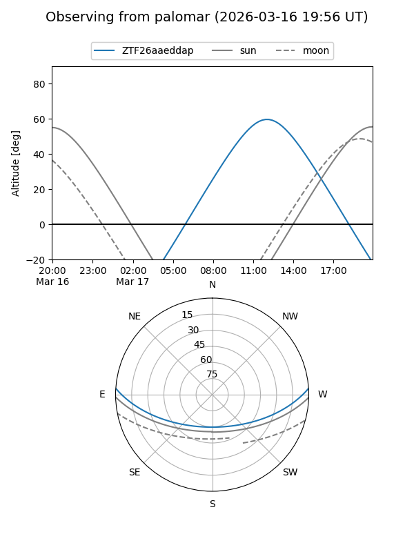

ZTF26aaeddap
Target ZTF26aaeddap at 2026-03-16 13:30
Aliases and brokers:
FINK: link
Lasair: link
ALeRCE: link
alt names
ZTF26aaeddap (ztf,fink_ztf)
Coordinates:
equatorial (ra, dec) = 238.5236,+3.18801
equatorial (HMS+DMS) = 15:54:05.67,+03:11:16.82
galactic (l, b) = (12.3142,+40.26888)
Flags:
Photometry:
last ztfg=17.67
1 ztfg detections
Lightcurve

Visibility


Additional plots